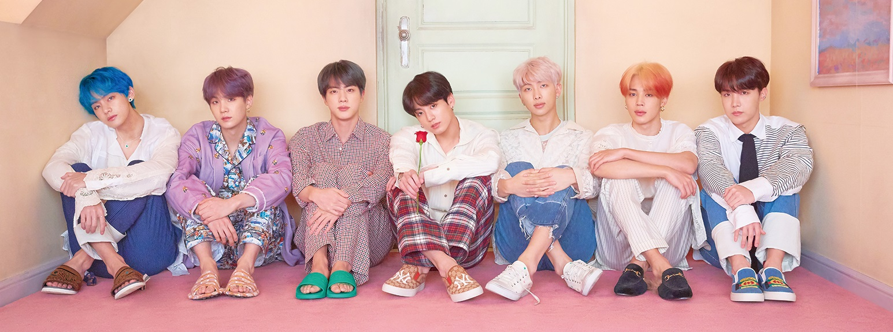

About BTS
BTS, an acronym of Bangtan Sonyeondan or “Beyond the Scene”, is a South Korean boyband that is capturing the hearts of millions of fans globally. The members of BTS are RM, Jin, SUGA, j-hope, Jimin, V and Jung Kook. Gaining recognition from their authentic, self-produced music and top-notch performances to the way they interact with their fans, the band is well on their way to becoming a global icon since they debuted in June 2013. While imparting a positive influence through activities such as the LOVE MYSELF campaign and the UN ‘Speak Yourself’ speech, BTS has mobilized millions of fans across the world (named ARMY), topped prominent music charts, sold out worldwide tours including stadiums and have been recognized with numerous prestigious awards like the Billboard Music Awards and American Music Awards.
Name stand For
The group's name, BTS, stands for the Korean expression Bangtan Sonyeondan (Hangul: 방탄소년단; Hanja: 防彈少年團), literally meaning "Bulletproof Boy Scouts". According to member J-Hope, the name signifies the group's desire "to block out stereotypes, criticisms, and expectations that aim on adolescents like bullets". In Japan, they are known as Bōdan Shōnendan (防弾少年団), which translates similarly. In July 2017, BTS announced that their name would also stand for "Beyond the Scene" as part of their new brand identity. This extended their name to mean "growing youth BTS who is going beyond the realities they are facing, and going forward."
Member Profile

RM
| Real Name |
: Kim Nam Joon |
| Date of Birth |
: 12th September, 1994 |

Jin
| Real Name |
: Kim Seok Jin |
| Date of Birth |
: December 4, 1992 |
Suga
| Real Name |
: Min Yoon Gi |
| Date of Birth |
: March 9, 1993 |

J-Hope
| Real Name |
: Jung Ho Seok |
| Date of Birth |
: February 18, 1994 |

Jimin
| Real Name |
: Park Ji Min |
| Date of Birth |
: October 13, 1995 |

V
| Real Name |
: Kim Tae Hyung |
| Date of Birth |
: December 30, 1995 |
Jung Kook
| Real Name |
: Jeon Jeong guk |
| Date of Birth |
: September 1, 1997 |
Copyrights ©2019 All rights reserved